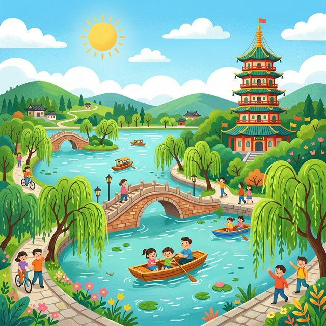

亲爱的小探险家，欢迎来到美丽的杭州！
这里有波光粼粼的西湖、飘香的龙井茶和古老的雷峰塔。无论晴天还是下雨，杭州都有着不同的美丽画卷等待你去发现！
🗺️ 1. 核心知识点
🎒 2. 出发准备
📖 3. 趣味小故事
🔍 4. 观察记录表
杭州最著名大湖！西湖十景个个都像一幅画，比如“断桥残雪”、“苏堤春晓”，非常浪漫。
西湖边上的一座塔，里面流传着非常感人的神话故事。站在塔顶，可以俯瞰整个西湖哦！
中国最有名的绿茶之一。茶树长在满觉陇的梯田上，泡出来的茶水有着春天植物的清香！
杭州不仅丝绸好，人们还把丝绸做成了非常精美的绸伞和扇子，上面还画着美丽的国画。
大诗人苏东坡非常喜欢杭州，他不仅写下了“欲把西湖比西子，淡妆浓抹总相宜”，还带领老百姓修建了西湖上著名的“苏堤”！
很多很多年前，一条修炼千年的白蛇变成了美丽的民间女子白素贞，在西湖的断桥上借伞，认识了一个叫许仙的人。他们之间发生了一段非常感人的故事，而雷峰塔正是这个故事里最重要的地方哦！
在西湖边散步时，你有没有看到水面上开着荷花，或者柳树下漂着小船？